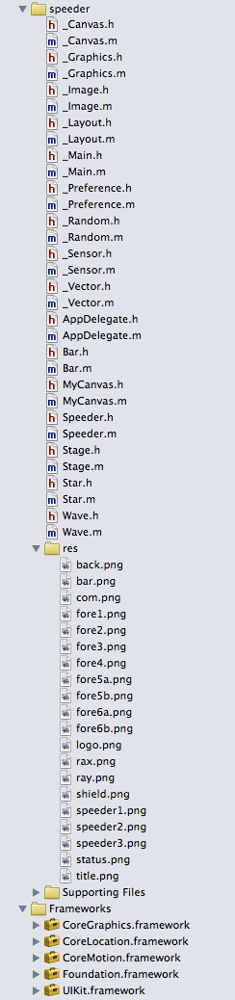

|
サンプルアプリ speeder |
ゲーム「Ray Speeder」です。iアプリからの移植サンプルです。
「i」フォルダ内に、移植の元となったiアプリ用のソース「Main.java」を入れています。
| プロジェクトの作成 |
『プロジェクトの作成』の流れに沿ってプロジェクトを作成します。
・「（1）プロジェクトを新規作成する」の項の、「Product Name」の入力を「speeder」にします。
・「（3）D2iPのファイルをプロジェクトに追加する」の項で追加するファイルは次のファイルです。
_Canvas.h
_Canvas.m
_Graphics.h
_Graphics.m
_Image.h
_Image.m
_Layout.h
_Layout.m
_Main.h
_Main.m
_Preference.h
_Preference.m
_Random.h
_Random.m
_Sensor.h
_Sensor.m
_Vector.h
_Vector.m
・「samples\speeder」フォルダの下の、次のファイルをプロジェクトに追加してください。
Bar.h
Bar.m
Speeder.h
Speeder.m
Stage.h
Stage.m
Star.h
Star.m
Wave.h
Wave.m
res\*.png
・下記のフレームワークを追加する必要があります。
CoreMotion.framework
CoreLocation.framework
・以下のような構成になります。なお、下の例では、「res」グループを作成し、「res\*.png」はその中に格納しています。

・「AppDelegate.h」「AppDelegate.m」「MyCanvas.h」「MyCanvas.m」のデフォルトの内容を一旦消去してから、「samples\speeder」フォルダの下の同名のファイルの内容をコピーしてください。